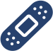
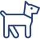
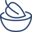

Soft Cake
Seja bem-vindo ao nosso site, fique à vontade para conhecer as delicias que fazemos para o paladar e alegria das pessoas.
QUEM SOMOS
Somos a Soft Cake, uma das maiores confeitarias de bolos veganos no estado de São Paulo, com 7 anos no mercado, trazemos felicidade em formas de bolo, em pote, pedaços ou inteiros, e claro, apensando sempre na sua saúde. Com um total 7 lojas espalhadas na grande São Paulo, levamos até as pessoas a felicidade em formas de bolos.
NOSSAS PRIORIDADES
Saúde
Bem-estar
Animais
Veganismo
Com parte do lucro de nossas vendas, a cada trimestre fazemos doação para ONG's que acolhem, protegem e cuidam de animais. Com nossas doações conseguimos contribuir alimentos, remédios e outras necessidades dos bichinhos.
Somos mais que bolos, somos diversidade
Ninguém chega a lugar algum sem o respeito, e nós da Soft Cake reforçamos isso.
A gente acredita no poder da inclusão, todos juntos independente de gênero, cor ou orientações.
A Soft Cake veio para revolucionar o mercado e oferece os melhores bolos veganos que uma confeitaria pode ter. E além disso, os ingredientes proporcionam uma vida saudável àqueles que procuram tais doces ou para qualquer pessoa que quiser apreciá-los.
Priorizamos a produção consciente, com o objetivo de amenizar os danos causados no meio ambiente e aos animais. Também faz parte da visão de nossa empresa a qualidade durante a produção.
• Qualidade máxima
• Eficiência
• Produção sustentável
• Diversidade